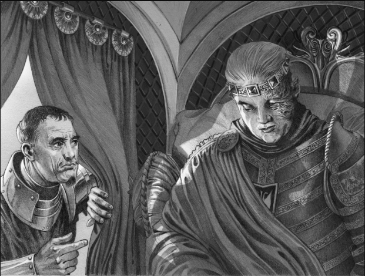

Conteúdo
Aegon II Targaryen é um personagem importante em "Fogo e Sangue", de George R. R. Martin, e algumas de suas melhores falas incluem:
O fogo e o sangue correm nas veias da minha família, e eu não permitirei que ninguém os apague.
Eu lutarei até meu último suspiro para proteger meu reino e meu povo.
"Um rei deve ser temido tanto quanto amado, e eu serei ambos.
Não há vitória sem sacrifício.
Eu não sou um homem que abandona seus amigos e aliados. Eu sou leal até o fim.
Aparência
Em "Fogo e Sangue", Aegon II Targaryen é descrito como um homem de aparência nobre e majestosa, típica dos Targaryen. Ele tem cabelos prateados, olhos violeta e um rosto anguloso com traços fortes.
Ao longo da história, sua aparência muda devido às feridas que sofre em batalhas e conflitos, incluindo uma cicatriz no rosto que o deixa desfigurado. Ele também é descrito como tendo uma postura altiva e dominante, que reforça sua personalidade forte e determinada.
Apesar de suas cicatrizes, Aegon II mantém sua aparência regal e nobre, com roupas e armaduras requintadas que demonstram seu status real. Sua aparência física é um reflexo de sua linhagem nobre e poderosa, e ajuda a fortalecer sua posição como um líder entre seus seguidores e inimigos.
Personalidade
Aegon II Targaryen, personagem do livro "Fogo e Sangue" de George R. R. Martin, é retratado como um homem ambicioso e determinado, que acredita ter o direito de reivindicar o Trono de Ferro e governar os Sete Reinos. Ele é o segundo filho do rei Viserys I Targaryen e é descrito como sendo obstinado e teimoso.
Aegon II é altamente competitivo e está disposto a lutar para manter seu poder. Ele é descrito como sendo corajoso e destemido, e é capaz de tomar decisões difíceis em momentos de crise. No entanto, sua sede de poder e sua relutância em abrir mão da coroa o tornam impopular entre seus súditos.
Alguns personagens veem Aegon II como um usurpador, enquanto outros o reconhecem como o herdeiro legítimo do Trono de Ferro. Em sua busca pelo poder, ele faz aliados e inimigos, e sua personalidade forte e decisiva afeta significativamente os eventos que se desenrolam na história.
Em resumo, Aegon II Targaryen é um personagem complexo, que combina ambição, coragem e obstinação, mas também é impopular e controverso em sua busca pelo poder.
Resumo
A história de Aegon II Targaryen em "Fogo e Sangue" começa quando seu pai, o rei Viserys I Targaryen, morre. Aegon II acredita que tem o direito de reivindicar o Trono de Ferro, mas sua meia-irmã Rhaenyra também reivindica o trono como a filha mais velha do rei.
Aegon II é coroado rei pelos seus apoiadores, mas a guerra civil conhecida como a Dança dos Dragões começa logo em seguida, com Rhaenyra lutando para derrubá-lo e assumir o trono. Aegon II é descrito como um líder astuto e corajoso, mas também implacável e disposto a fazer o que for necessário para manter o poder.
Durante a guerra, Aegon II sofre várias derrotas, incluindo a perda de um de seus dragões e uma cicatriz no rosto que o deixa desfigurado. Ele também é traído por alguns de seus aliados, que mudam de lado em favor de Rhaenyra.
No entanto, Aegon II continua lutando, mesmo quando sua causa parece perdida. Ele usa táticas brutais e cruéis para manter sua posição, incluindo envenenar o dragão de Rhaenyra. Eventualmente, Aegon II é morto em batalha pelos homens de Rhaenyra, encerrando a guerra civil.
A história de Aegon II é marcada pela luta pelo poder e pela busca pela manutenção do controle do Trono de Ferro. Ele é retratado como um personagem ambicioso e obstinado, que luta ferozmente para manter sua posição, mesmo diante de adversidades e traições. Aegon II é um dos personagens centrais da Dança dos Dragões e sua história é contada ao longo do livro "Fogo e Sangue".
Morte
Com os exércitos inimigos se aproximando da capital e seus lordes discutindo e tramando, Aegon II permaneceu alheio, tendo prazer apenas na contemplação de seu casamento com a senhora Cassandra Baratheon. O rei ordenou a reconstrução do Fosso dos Dragões e encomendou duas estátuas representando seus irmãos, Daeron o Ousado e Aemond Um-Olho.
Contudo, Kermit Tully, Senhor de Correrrio, e seu exército haviam derrotado as forças do lorde Borros Baratheon na Batalha da Estrada do Rei (meados de 131 d.C.). Sem nenhum exército Verde para proteger a capital, os Rapazes marchando para Porto Real e com reforços dos Negros vindos do Vale e Norte (este último liderado por Cregan Stark), Lorde Corlys Velaryon sabia que a derrota era iminente. Ele aconselhou o rei Aegon a abdicar e se juntar a Patrulha da Noite, apesar da rainha Alicent Hightower o lembrar que eles ainda tinham reféns. O rei afirmou que se recusaria a aceitar qualquer tipo de rendição. Ele então deu ordens para que as orelhas do príncipe Aegon o Jovem fossem cortadas e os pedaços enviados para o lorde Tully como um aviso.
Após se reunir com seu pequeno conselho, o fatigado Aegon cambaleou para dentro de sua liteira e pediu para ser levado para o septo real na Fortaleza Vermelha. O rei recebeu sua costumeira garrafa de vinho tinto da Árvore para lhe aliviar a dor. Quando sua escolta chegou e Sor Gyles Belgrave da Guarda Real levantou as cortinas da liteira, Aegon II foi encontrado morto com sangue nos lábios.
Com Aegon II morto, Lorde Corlys e o jovem Aegon, que não havia sido machucado, partiram para encontrar o exército de Kermit Tully, afirmando que o rei estava morto. Enquanto isso, Lorde Leowyn Corbray, comandante da tropa Arryn, testemunhou a Frota Velaryon abaixando a bandeira de Aegon II.
O falecido rei não tinha herdeiros masculinos diretos, o que fez com que o seu sobrinho, Aegon o Jovem, ascendesse ao Trono de Ferro, se casando com a filha de Aegon II, a princesa Jaehaera Targaryen, unindo assim os dois ramos da Casa Targaryen. Seguindo a tradição Targaryen, Aegon II foi cremado, com alguns esperando que os males e o ódio de seu reinado fossem queimados junto com seus restos mortais.